Guide de l'application
Présences de la Jeunesse de Châtel-St-Denis
1Le principe
L'application compte les présences des membres de la jeunesse aux travaux (char, costumes, rangements…). Tout repose sur quatre notions.
| Notion | Ce que c'est |
|---|---|
| Catégorie | Le type de travail : Char, Costume… Chaque catégorie a une couleur. |
| Séance | Un jour + une catégorie, par exemple « Char du samedi 26 septembre ». Il ne peut y avoir qu'une séance par catégorie et par jour : si deux personnes du comité la créent en même temps, elles tombent sur la même. |
| Présence | Une personne cochée dans une séance. Pas cochée = absente. Il n'y a rien d'autre à remplir. |
| Poids | Ce que vaut une séance : en général 1 (soirée) ou 2 (journée complète). 0.5 reste possible pour un petit travail d'une heure ou deux. Une personne peut avoir un poids différent du reste du groupe, par exemple si elle n'est venue que l'après-midi. |
Le classement additionne, pour chaque personne, le poids des séances où elle était présente. Deux journées complètes et une soirée de char donnent 2 + 2 + 1 = 5.
Deux rôles
Seul le comité a un compte. Les membres de la jeunesse n'utilisent pas l'application.
| Action | Comité | Admin |
|---|---|---|
| Créer des séances, pointer, voir le classement, exporter | oui | oui |
| Ajouter et modifier des membres, créer et modifier des catégories | oui | oui |
| Supprimer une séance | les siennes | toutes |
| Supprimer un membre ou une catégorie jamais utilisés | non | oui |
| Créer les comptes du comité, les désactiver, réinitialiser un mot de passe | non | oui |
2Installer et se connecter
Installer l'application sur le téléphone
Adresse de l'application : jeunesse-csd.vercel.app
Elle s'ouvre dans le navigateur, mais elle s'utilise mieux installée : elle a alors sa propre icône et s'ouvre en plein écran.
- iPhone : ouvrir l'adresse dans Safari → bouton Partager → Sur l'écran d'accueil.
- Android : ouvrir l'adresse dans Chrome → menu ⋮ → Installer l'application (ou Ajouter à l'écran d'accueil).
Se connecter
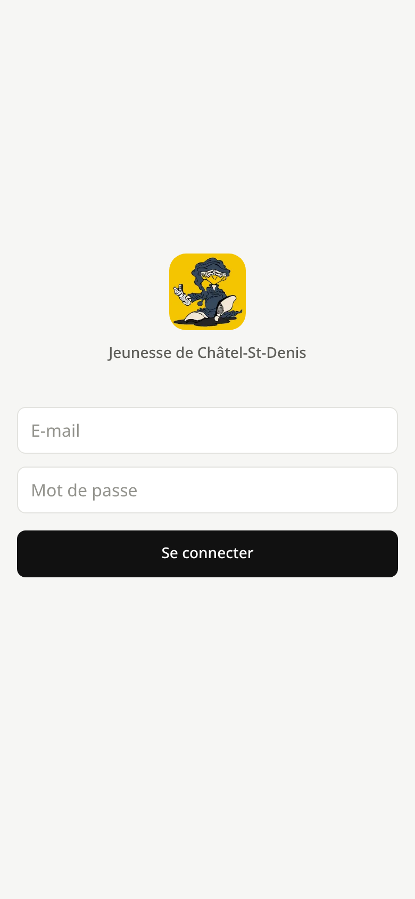
- E-mail : l'adresse donnée par l'admin lors de la création du compte. C'est ton identifiant, pas ton nom.
- Mot de passe : la première fois, le mot de passe provisoire reçu de l'admin (par exemple
k7mq-x3fa-9hwt). - Se connecter. Tu restes connecté ensuite : pas besoin de retaper le mot de passe à chaque ouverture.
Première connexion
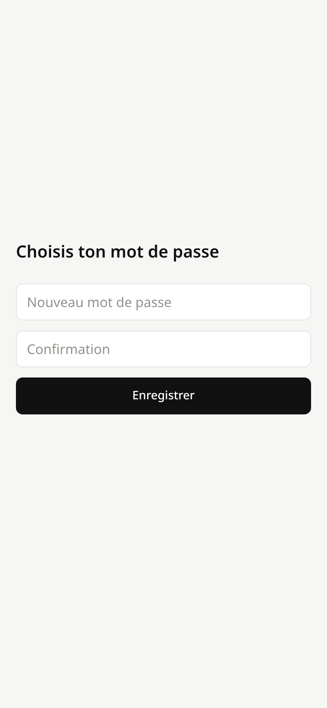
- Tant que le mot de passe provisoire n'est pas changé, l'application affiche uniquement cet écran.
- Choisis un mot de passe d'au moins 8 caractères, différent du provisoire, et tape-le deux fois.
- Enregistrer ouvre l'application.
Il n'y a pas de lien « mot de passe oublié » : demande à un admin, il te donne un nouveau mot de passe provisoire (voir chapitre 11).
3Le calendrier
C'est l'écran d'accueil. Il montre le mois en cours et toutes ses séances.

- Mois affiché. Quand tu regardes un autre mois, un bouton Aujourd'hui apparaît à côté pour revenir.
- Mois précédent / suivant.
- Un jour avec des séances : une pastille par séance, de la couleur de sa catégorie. Toucher un jour ouvre sa page.
- Aujourd'hui, sur fond jaune.
- Séances du mois : date, catégorie, poids (affiché s'il n'est pas 1) et nombre de présents. Toucher une ligne ouvre le pointage.
- Nouvelle séance : ouvre la page d'aujourd'hui (chapitre suivant).
- Navigation entre les trois parties de l'application : Calendrier, Membres, Réglages.
4Créer une séance
On crée une séance depuis la page d'un jour : avec le bouton + du calendrier pour aujourd'hui, ou en touchant un autre jour dans le calendrier.

- Jour précédent / suivant, pour saisir une séance oubliée la veille par exemple.
- Compte pour : le poids de la séance, à choisir avant de toucher la catégorie : 1 pour une soirée, 2 pour une journée complète, 0.5 pour un petit travail d'une heure ou deux. Il reste modifiable ensuite dans les options.
- Catégories permanentes : un bouton par catégorie qui n'a pas encore de séance ce jour-là. Le toucher crée la séance et ouvre directement le pointage.
- Autre catégorie : pour un travail ponctuel qui n'a pas de bouton (rangement après la fête, loto…).
Travail ponctuel
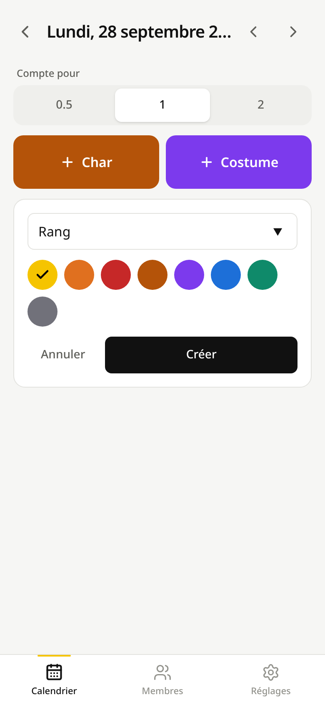
- Nom du travail. Les catégories ponctuelles déjà utilisées sont proposées pendant la frappe. Retaper un nom existant, même avec d'autres majuscules, réutilise la même catégorie : les présences s'additionnent au classement.
- Couleur, utilisée seulement si la catégorie est nouvelle.
- Créer ouvre le pointage. La nouvelle catégorie n'ajoute pas de bouton à la page des jours : elle est rangée parmi les ponctuelles (voir chapitre 9).
Un jour qui a déjà des séances
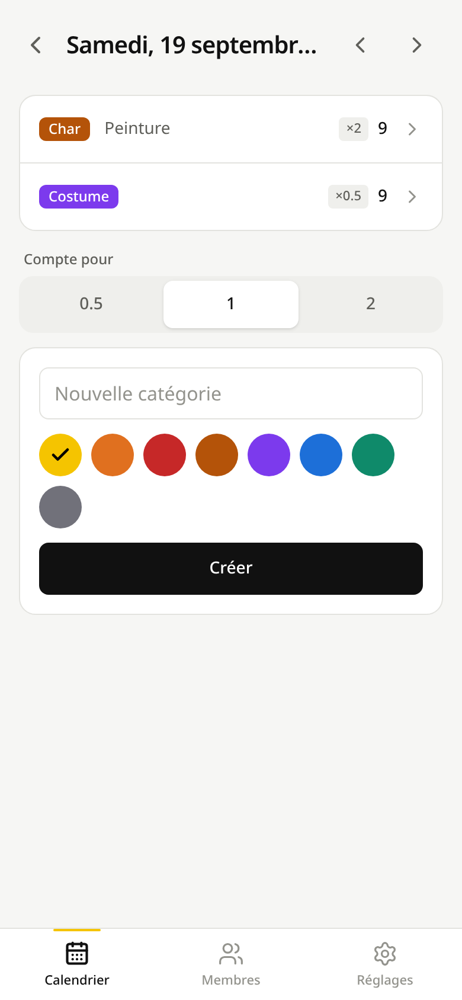
- Séance existante : catégorie, poids, nombre de présents. La toucher pour pointer ou corriger.
- Remarque de la séance, si quelqu'un en a mis une.
- Ici, Char et Costume ont déjà leur séance : il n'y a plus de bouton, seulement le champ pour un travail ponctuel.
5Pointer les présences
La liste contient tous les membres, par ordre alphabétique du prénom. Il n'y a pas de bouton « Enregistrer » : chaque coche est enregistrée tout de suite.

- Recherche par prénom ou nom, sans se soucier des accents ni des majuscules.
- Nombre de présents, mis à jour à chaque coche.
- Filtres : tout le monde, seulement les présents (pour vérifier), ou seulement les absents (pour trouver qui manque).
- Absent : toucher n'importe où sur la ligne pour cocher.
- Présent : ligne jaune. Toucher à nouveau pour décocher.
- Poids de la personne. Gris = poids de la séance. Jaune = poids personnel : Léa n'est venue que l'après-midi, elle compte 1 au lieu de 2.
- Options de la séance : poids, remarque, suppression (chapitre 6).
Poids d'une personne
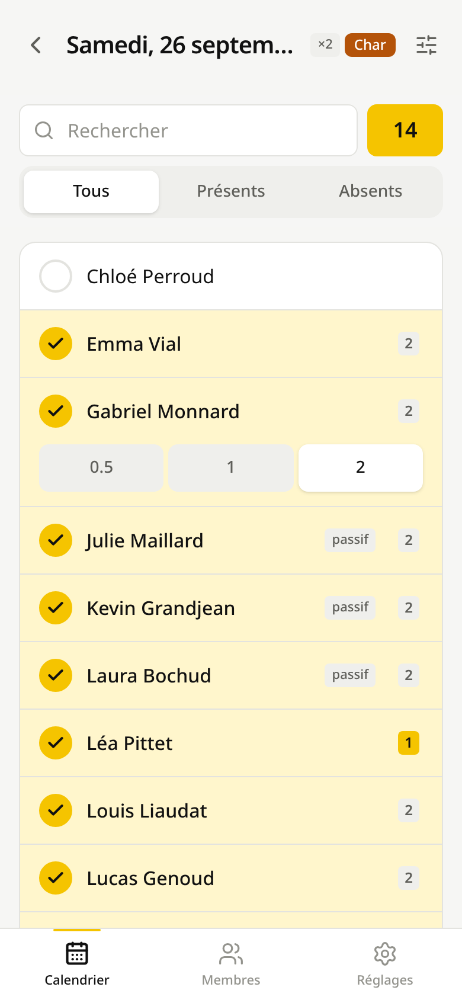
- Toucher la pastille d'une personne cochée ouvre le choix du poids.
- Choisir la valeur. Rechoisir le poids de la séance (ici 2) supprime l'exception : la pastille redevient grise.
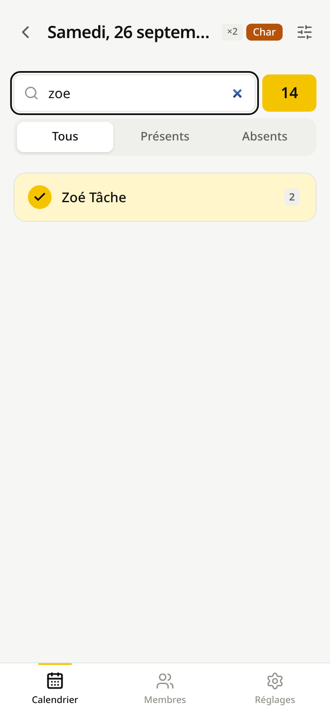
- Taper
zoesuffit… - … pour trouver Zoé Tâche. Pratique quand trente personnes arrivent en même temps.
Plusieurs membres du comité peuvent pointer la même séance en même temps : chaque coche est indépendante. La liste se met à jour toute seule toutes les 15 secondes et quand on revient dans l'application, pour afficher les coches des autres.
Si la connexion coupe, la case revient à son état précédent et le message « Pas de connexion : le dernier changement n'est pas enregistré » s'affiche. Une case qui reste cochée est donc bien enregistrée. Il suffit de recocher quand le réseau revient.
Les anciens membres n'apparaissent plus dans la liste, sauf dans les séances où ils étaient présents : leur historique reste lisible.
6Modifier ou supprimer une séance
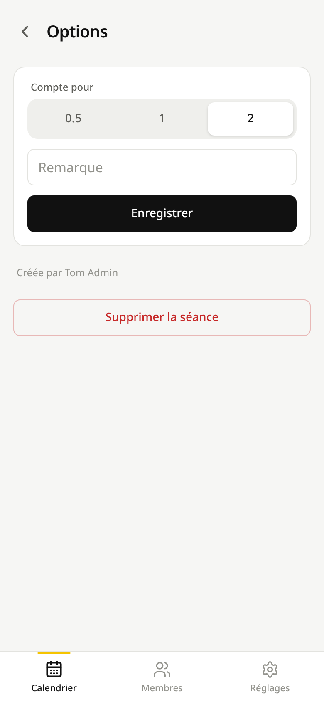
- Poids de la séance. Le changer met à jour tous les présents qui n'ont pas de poids personnel, et le classement avec.
- Remarque libre, affichée sur la page du jour (« Peinture », « Montage de la structure »…).
- Auteur de la séance.
- Supprimer la séance, avec toutes ses présences. Visible seulement pour l'auteur de la séance et pour les admins.
La date et la catégorie d'une séance ne se modifient pas. Une séance créée sur le mauvais jour se supprime et se recrée au bon jour.
7Membres et classement
L'onglet Membres est à la fois la liste des personnes et le classement. Chaque filtre s'applique dès qu'on le change.

- Export CSV du classement affiché, avec les mêmes filtres.
- Ajouter une personne ou une liste (chapitre 8).
- Période : une année civile, Tout depuis le début, ou Dates pour choisir un début et une fin.
- Catégorie : toutes, ou une seule (classement du char uniquement, par exemple).
- Statut : actifs et passifs, ou l'un des deux.
- Anciens membres : les inclut dans la liste, en gris.
- Rang et total (somme des poids). Les trois premiers sont en jaune. Les ex æquo partagent le même rang et le suivant saute : 4, 4, 4, puis 7.
- passif : membre passif de la société.
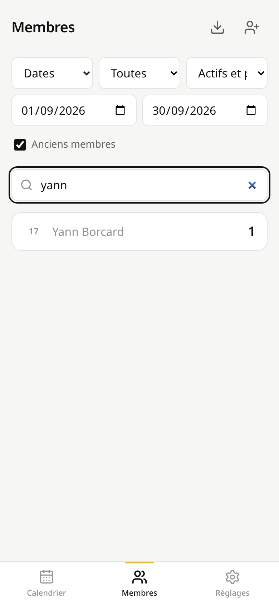
- Avec Dates, deux champs apparaissent : début…
- … et fin de la période, incluses.
- Avec Anciens membres coché, Yann Borcard, qui a quitté la jeunesse, réapparaît en gris avec ses présences (retrouvé ici avec la recherche, qui filtre la liste sans changer les rangs).
Export CSV
L'icône de téléchargement produit un fichier classement-2026-01-01-2026-12-31.csv avec les colonnes
Rang, Prénom, Nom, Statut, Présences. Il contient exactement ce qui est affiché (période, catégorie, statut, anciens
membres) et s'ouvre directement dans Excel, accents compris. La recherche par nom n'est pas prise en compte :
le fichier contient toute la liste filtrée. Attends que la liste soit à jour après un changement de
filtre avant de toucher l'export.
8Fiche d'un membre, ajout et modification
Toucher un nom dans le classement ouvre sa fiche.

- Modifier la personne.
- Total depuis le début, toutes catégories confondues (la fiche n'est pas filtrée par période).
- Total par catégorie.
- Historique par année : date, catégorie et poids de chaque séance (Léa compte 1 le 26 septembre). Toucher une ligne ouvre la séance.
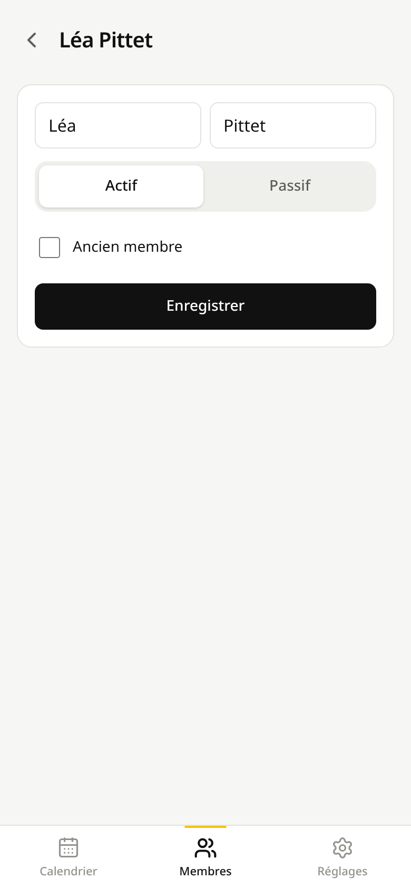
- Prénom et nom. Ce sont les seules données personnelles enregistrées : des membres peuvent être mineurs.
- Actif / passif : le statut dans la société.
- Ancien membre : la personne a quitté la jeunesse. Elle disparaît du pointage et du classement (sauf avec le filtre Anciens membres), mais son historique est conservé. Décocher la fait revenir.
Un membre n'est jamais supprimé une fois qu'il a une présence : on coche Ancien membre. Un admin voit un bouton Supprimer ce membre seulement pour une personne qui n'a aucune présence, par exemple ajoutée par erreur.
Ajouter des membres

- Une personne : prénom, nom, statut.
- Ajouter. Le formulaire se vide pour la personne suivante.
- Ajouter une liste : une personne par ligne, prénom et nom séparés par un point-virgule, avec
; passifen plus pour un membre passif. Si une ligne est mal écrite, rien n'est ajouté et le numéro de la ligne est indiqué.
Exemple de liste, à taper ou à coller depuis un fichier texte (un copier-coller depuis Excel sépare les colonnes par des tabulations, pas par des points-virgules) :
Léa ; PittetJean-Marc ; Du PasquierJulie ; Maillard ; passif
9Les catégories
Réglages → Catégories. Il en existe deux sortes :
- Permanentes (Char, Costume) : elles ont un bouton sur la page de chaque jour.
- Ponctuelles (cochées Archivée) : pas de bouton. On les retrouve en tapant leur nom dans Autre catégorie. Leurs séances comptent normalement au classement.

- Catégorie permanente et nombre de séances. Toucher pour déplier.
- Nom, modifiable : l'historique suit, rien n'est perdu.
- Couleur des boutons, pastilles et étiquettes.
- Archivée : la catégorie devient ponctuelle et perd son bouton. Décocher pour la rendre permanente (une saison de char qui recommence, par exemple).
- Catégorie ponctuelle, en grisé.
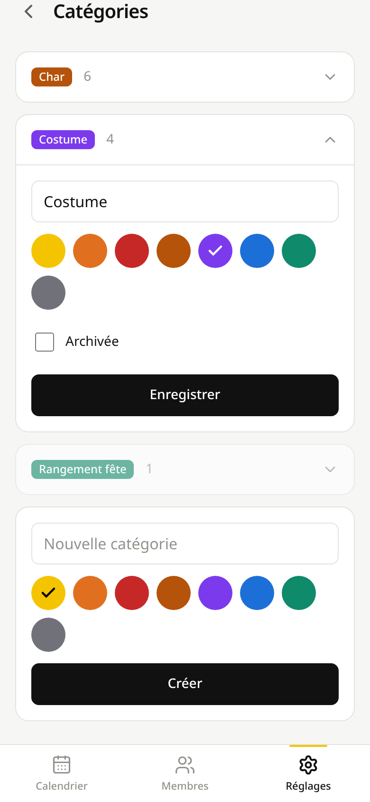
- En bas de la liste : nom et couleur d'une nouvelle catégorie permanente. Deux catégories ne peuvent pas avoir le même nom, même écrit avec d'autres majuscules.
- Créer. Le bouton apparaît aussitôt sur la page des jours.
Un admin voit un bouton Supprimer dans une catégorie qui n'a jamais été utilisée. Une catégorie qui a des séances s'archive au lieu de se supprimer.
10Réglages personnels

- Apparence : suivre le téléphone (Système), toujours clair ou toujours sombre.
- Catégories (chapitre 9).
- Comité : gestion des comptes, visible seulement pour les admins (chapitre 11).
- Ton nom, affiché aux autres membres du comité, par exemple comme auteur d'une séance.
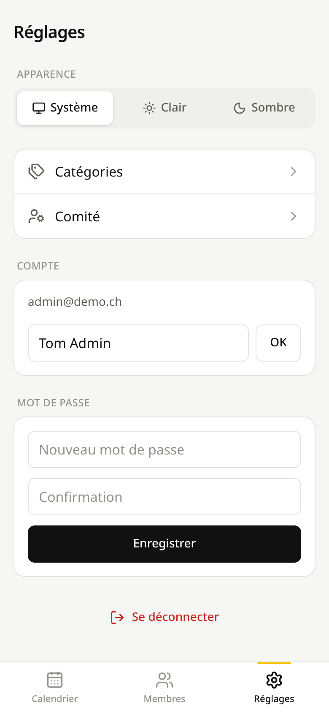
- Changer de mot de passe : 8 caractères au minimum, tapé deux fois.
- Se déconnecter, utile sur un téléphone prêté.
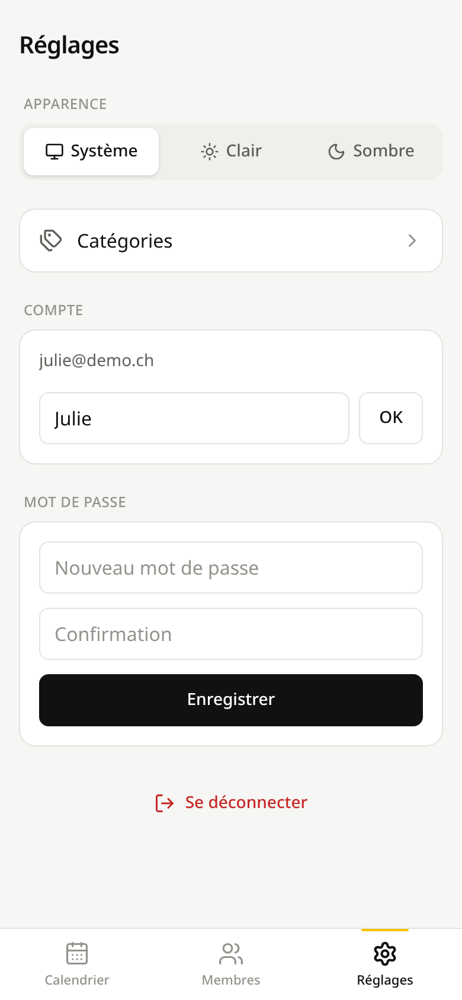
Les mêmes réglages vus par un membre du comité qui n'est pas admin : pas d'entrée Comité.
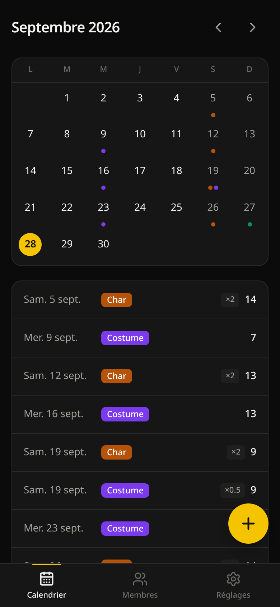
Le calendrier en apparence sombre.
11Administration du comité
Réservé aux admins : Réglages → Comité. Chaque membre du comité a son propre compte, que seul un admin peut créer. Personne ne peut s'inscrire seul.

- Dernière connexion de la personne.
- Passer admin / Retirer admin.
- Désactiver : la personne ne peut plus se connecter (départ du comité). Tout ce qu'elle a saisi est conservé. Réactiver annule.
- Mot de passe provisoire, pour une personne qui a oublié le sien : un mot de passe est proposé. Définir remplace son mot de passe actuel, et elle devra en choisir un nouveau à sa prochaine connexion. Transmets-lui toi-même le mot de passe provisoire.
- admin : ce compte a les droits d'administration. « (toi) » marque ton propre compte, sur lequel aucune action n'est possible : un admin ne peut pas se retirer ses droits lui-même.
Créer un compte

- Nom affiché dans l'application.
- E-mail : l'identifiant de connexion. Il doit être correctement écrit (
nom@domaine.ch), mais aucun e-mail n'est envoyé. - Mot de passe provisoire, proposé automatiquement (sans caractères ambigus comme 0/O ou 1/l).
- Créer le compte. Un message affiche l'e-mail et le mot de passe à transmettre à la personne.
Pour une personne qui quitte le comité : Désactiver. Pour un nouveau : Créer le compte, puis lui transmettre l'e-mail et le mot de passe provisoire. Il choisira son propre mot de passe à sa première connexion. Les comptes ne sont jamais supprimés, pour que l'historique garde ses auteurs.